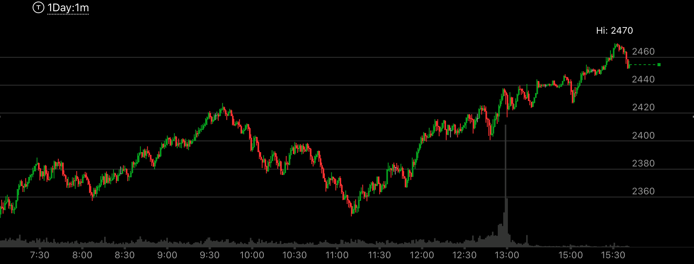

没有反转，但是大幅回调
- 大盘并没有反转，但是它因为涨的太多或者跌的太多，需要一个很大的回调，
- 回调可能是由于相对弱势产生。这时，相对弱势会创新的极点。但是不是反转。这种相对弱势，
也会导致很大的回调。
- 回调也会是大盘方向出现了加速。但是注意这个加速不会创新的极点，而是离开极点后，一段距离，
然后出现加速走势。这样才算大幅回调。如果加速的同时，创新的极点，那么就是反转了。
- 还有一种情况是，第二浪不如第一浪，但是第二浪也出现了加速。这样会大幅回调，但是也不会反转。
图示：THU 9 创走势新高，拉回后，它的加速没有被中和，再次冲高，创新高后，走平。
这个就是下跌的相对弱势。从时间上分析，大盘没有反转。但是会导致大幅回调。回调速度很快。这时应该卖掉，然后等它下跌后稳定后，
立刻买入。因为没有反转。它再底部停留时间会比较久。所以应该等等。
图示：22：00它快速上涨后，创新高，然后没有全部拉回，而是部分拉回后，
再次创新高，然后走平3分钟。这个已经很好了。这样就发生了相对强势。它立刻快速的大跌。可以先卖掉。等它稳定后。立刻买入。
不用追求最低点。

图示：thu26，大盘冲高后，算是第一浪，然后走平很久，再次加速上涨。这个第二浪比第一浪幅度要小。
说明它没有反转。但是会大幅拉回。注意Sun29，这个周日开盘的时候，它是低开后，冲高，然后创新高，其实只高了很少一点。然后在高处出现了相对弱势。
这样它会大幅拉回。拉回的位置和周日开盘的位置密切相关。周日是开盘后，立刻上涨。说明它是尖锐的。这样它拉回后，应该低于周日的低点，
然后走平。这样才是一个真的底部。未来应该创新高。

图示：9:30出现走势新高，但是没有反转。它运动很慢。所以不是顶点。
但是它大幅拉回
图示：2：28出现了一个向上的加速，但是没有创新高，它缓慢走出新高。
这样就开始大幅的回调。回调幅度到了100个点。但是它仍然只是回调，不是反转。
图示：10：45缓慢创新高，拉回很大，形成了下跌的加速。说明
这个不是顶部。但是11：00上冲过程当中，出现了一个小的加速走势。然后这个加速走势一直没有
被修正。大盘一直在高位震荡。最后大盘大跌。但是这个还是回调，而不是反转。
图示：在一分钟走势中，16：00冲高后，立刻拉回，16：30创新高，走平很久。
这个不是反转，而是一个大幅回调。因为15：45的新高浪，速度和幅度都不如12：30开始的浪。
图示：
图一：开盘大涨，第一浪很大，然后再次上涨，缓慢走出新高。
在高点徘徊很久后，开始下跌。它在12：10，走出一个5浪上涨走势，没有新高，但是接近新高。这个就是一个
明确的走势，表示会继续下跌。
图二：SUN8.是前面的走势结束。盘后一直走平。第二天，Mon9，开盘冲高，接近前面高点，再次走平，然后大跌。
不断的走低，形成很大的回调。但是要记住，它不是反转。


图示：
图一：大涨，出现第一浪很强，第二浪很弱的走势。
图二：7：00它缓慢冲高后，加速冲高，这个就形成了一个反转走势。没有创新高。但是接近新高。然后一路大跌，填补了真空。